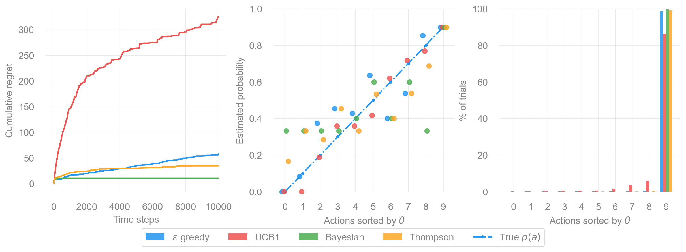

from abc import ABC, abstractmethod
import matplotlib.pyplot as plt
import matplotlib.ticker as ticker
import numpy as np
import numpy.typing as npt
from aquarel import load_theme
%config InlineBackend.figure_formats = {'retina', 'png'}Bernoulli Multi-Armed Bandit Problem
python
code
MAB
reinforcement learning
Abstract
The multi-armed bandit (MAB) problem is a classic reinforcement learning problem that illustrates the exploitation-exploration dilemma.
Note
Credits to Lil’s blog post. I slightly improved and extended it for myself to better understand statistical terms.
The exploitation-exploration dilemma exists in many aspects of our lives. For instance, for your favourite option (e.g., restaurant, chatbot, artist, busic band) you are confident of what you will get, but you miss the chance to discover an even better option. But if you choose to try new options all the time, you’re very likely gonna deal with unpleasant service from time to time. Not every new option pays off.
This trade-off becomes especially important when we operate under incomplete information. Without full knowledge of our environment, we must gather information while simultaneously making good decisions. Exploitation uses what what we’ve learned, while exploration risks short-term loss to gain long-term insight.
To see how this plays out in a clean mathematical settings, we turn to a classic model.
What is a Multi-Armed Bandit?
The multi-armed bandit (MAB) captures this dilemma elegantly. Imagine a row of slot machines (i.e., “one-armed bandits”) each with unknown probability of payout. The goals is to maximize the total reward over time. Each pull (i.e., action) gives you information, but also costs you the chance to pull a better machine.
The Environment
Let’s consider the simplest version of the problem. You face several slot machines, each with unknown Bernoulli reward distribution. Each play either gives you a fixed reward or gives nothing. You have plenty of trials, and your choices don’t change the underlying probabilities.
The question is: What is the best strategy to achieve the highest long-term reward?
Note
For newcommers to reinforcement learning (as I was when writing this), the following clarifications help.
First, regret measures how much reward you lost compared to always choosing the best option in hindsight. It quantifies the “if only I had known…” feeling.
Second, the reward probabilities are not known ahead of time. You discover them through experiennce. This is what makes the problem interesting.
class BaseBandit(ABC):
k: int # number of arms
best_proba: float | np.float64 # hidden to solver; for regret calculation, highest possible reward probability
probas: npt.NDArray[np.float64] # hidden to solver; reward probabilities
@abstractmethod
def generate_reward(self, i: int) -> float:
"""Returns reward after lever `i` is pulled."""
raise NotImplementedError
class BaseSolver(ABC):
bandit: BaseBandit # reference to the bandit instance
counts: npt.NDArray[np.int64] # hold stats of pulled levers
actions: list[int]
rewards: list[float]
regrets: list[float]
@abstractmethod
def __init__(self, bandit: BaseBandit) -> None:
"""bandit (BaseBandit): the target bandit to solve."""
assert isinstance(bandit, BaseBandit)
self.bandit = bandit
self.counts = np.zeros(self.bandit.k, dtype=np.int64)
self.actions = [] # a history of lever ids, 0 to bandit n-1.
self.rewards = [] # a history of collected rewards.
self.regrets = [] # a history of regrets for taken actions.
@property
def num_steps(self) -> int:
return len(self.actions)
def update_regret(self, i: int) -> None:
"""Update the regret after the lever `i` is pulled."""
regret = self.bandit.best_proba - self.bandit.probas[i]
self.regrets.append(regret)
@property
@abstractmethod
def estimated_probas(self) -> npt.NDArray[np.float64]:
"""Retrieve learned reward probability for each arm `n` of the bandit."""
raise NotImplementedError
@abstractmethod
def run_one_step(self) -> tuple[int, float]:
"""Return solver's selected action and bandit's outcome reward."""
raise NotImplementedError
def run(self, num_steps: int) -> None:
"""Run simulation for `num_steps` steps."""
for _ in range(num_steps):
i, r = self.run_one_step()
self.counts[i] += 1
self.actions.append(i)
self.update_regret(i)
self.rewards.append(r)Formal Definition
With the intuition in place, we can now describe the Bernoulli multi-armed bandit more formally. A bandit problem is defined as a tuple \(\langle \mathcal{A}, \mathcal{R} \rangle\), where:
- We have \(K\) machines (or levers) with probabilities \(\{ \theta_{1}, \ldots, \theta_{K} \}\).
- At each time step \(t\), we take an action \(a_t\) on one slot machine and receive a reward \(r_t\).
- \(\mathcal{A}\) is a set of possible actions. The value of an action is expected reward, \(Q(a) = \mathbb{E}[r|a] = \theta\). If action \(a_{t}\) corresponds to machine \(i\), then \(Q(a_{t}) = \theta_{i}\).
- \(\mathcal{R}\) is the reward function. In a Bernoulli bandit, each pull yields a reward of \(1\) with probability \(Q(a_{t})\), and \(0\) otherwise.
Note
Recall that a Bernoulli distribution is a discrete probability distribution, which takes the value \(1\) with probability \(p\) and \(0\) with probability \(1 - p\).
The symbol \(\mathbb{E}[\cdot]\) denotes the expected value, a generalized weighted average. The expression \(\mathbb{E}[r|a]\) reads as the expected reward (\(r\)) that we took action \(a\).”
Crucially, the probabilities \(\{\theta_{i}\}\) are NOT known in advance. They must be estimated through interaction.
A Bernoulli bandit can be seen as a simplified Marko decision process (MDP) without a state space. The objective is to maximize the total reward \(\sum_{t=1}^{T} r_{t}\). If we knew which action had the biggest reward probability, this would be equivalent to minimizing the regret from not always choosing that optimal action.
Let \(\theta^{*}\) denote the reward probability of the optimal action \(a^{*}\):
\[ \theta^{*} = Q(a^{*}) = \max_{a \in \mathcal{A}} Q(a) = \max_{1 \leq i \leq K} \theta_{i} \]
The expected cumulative regret up to the time \(T\) is then:
\[ \mathcal{L}_{T} = \mathbb{E}\left[\sum_{t=1}^{T}(\theta^{*} - Q(a_{t}))\right] \]
class BernoulliBandit(BaseBandit):
def __init__(
self,
k: int,
probas: list[float] | npt.NDArray[np.float64] | None = None,
seed: int | None = None,
):
# sanity check: `probas` needs to be None or of size `n`.
assert probas is None or len(probas) == k
self.k = k # save number of bandits
self.rng = np.random.default_rng(seed=seed)
# random probabilities, if they are explicitly defined
if probas is None:
probas = self.rng.random(size=self.k)
# convert to numpy array for easier operations later
self.probas = np.asarray(probas)
# in case of Bernoulli MAB, highest probabily is equal to optimal
self.best_proba = np.max(self.probas)
def generate_reward(self, i: int) -> int:
# The player selected the i-th machine.
return int(self.rng.random() < self.probas[i])Bandit Strategies
With the bandint problem formally defined, the next question is: how should we choose actions over time? Different strategies encode different assumptions about how exploration should be handled. Broadly, we can distinguish three categories:
- No exploration: always exploit the best-known action (naive and generally poor).
- Random exploration: explore uniformly at random.
- Informed exploration: explore more often when uncertainty is high.
A simple and widely used example of the last category is the \(\epsilon\)-greedy algorithm.
Epsilon-Greedy Algorithm
The \(\epsilon\)-greedy algorithm balances exploitation and exploration by choosing the currently best action most of the time, while occasionally exploring at random.
Information State
At the time step \(t\), the algorithm maintains:
- empirical action-value estimates \(\hat{Q}_t(a)\),
- action counts \(N_t(a)\),
summarizing all past interactions.
The empirical value estimate for action \(a\) is defined as:
\[ \hat{Q}_t(a) = \frac{1}{N_t(a)} \sum_{\tau = 1}^t r_\tau \cdot \mathbb{𝟙}[a_\tau = a] \]
where:
- \(r_\tau\) is the reward received at time step \(\tau\). For a Bernoulli bandit, this is either \(1\) (success) or \(0\) (no reward).
- \(\mathbb{𝟙}[a_\tau = a]\) is an indicator function equal to \(1\) when action \(a\) was taken at time \(\tau\), and \(0\) otherwise.
- \(N_t(a)\) is the number of times action \(a\) has been selected: \[ N_{t}(a) = \sum_{\tau = 1}^t \mathbb{𝟙}[a_\tau = a] \]
Policy
The \(\epsilon\)-greedy policy defines a stochastic action-selection rule:
- with probability \(1 - \epsilon\), the greedy action is selected: \[ \hat{a}^{*}_t = \arg\max_{a\in\mathcal{A}} \hat{Q}_t(a) \]
- with probability \(\epsilon\), an action is selected uniformly at random.
Equivalently, the policy can be written as:
\[ \pi(a|h_t) = \begin{cases} 1 - \epsilon + \frac{\epsilon}{|\mathcal{A}|}, & a = a^*_t, \\ \frac{\epsilon}{|\mathcal{A}|}, & \text{otherwise}. \end{cases} \]
Update Rule
After selecting action \(a_t\) and observing reward \(r_t\), the estimate \(\hat{Q}_t(a_t)\) is updated using the new observation.
Note
Despite its simplicity, \(\epsilon\)-greedy often performs reasonably well. However, because exploration is random and does not depend on uncertainty, it can waste trials on clearly suboptimal actions.
class EpsilonGreedy(BaseSolver):
def __init__(self, bandit: BaseBandit, eps: float, init_proba: float = 1.0, seed: int | None = None) -> None:
"""
eps (float): the probability to explore at each time step.
init_proba (float): default to be 1.0; optimistic initialization
"""
super().__init__(bandit)
assert 0.0 <= eps <= 1.0
self.eps = eps
# optimistic initialization
self.estimates = np.full(self.bandit.k, fill_value=init_proba, dtype=np.float64)
# define random generator with seed for reproducibility
self.rng = np.random.default_rng(seed=seed)
@property
def estimated_probas(self) -> npt.NDArray[np.float64]:
return self.estimates
def run_one_step(self) -> tuple[int, float]:
# With probability epsilon pick random exploration, or pick the known best lever.
if self.rng.random() < self.eps:
# pure random exploration
i = self.rng.integers(0, self.bandit.k)
else:
# greedy selection with random tie-breaking
candidates = np.flatnonzero(self.estimates == self.estimates.max())
i = int(self.rng.choice(candidates))
r = self.bandit.generate_reward(i)
self.estimates[i] += 1.0 / (self.counts[i] + 1) * (r - self.estimates[i])
return i, rUpper Confidence Bounds (UCB)
Random exploration gives us the opportunity to try actions we know little about. However, pure randomness can also cause us to waste time and re-exploring action we already have striong evidence are suboptimal (bad luck still happens!). Two broad alternatives exist:
- Decay \(\epsilon\) over time in \(\epsilon\)-greedy, making exploration less frequent, or
- Act optimistically for uncertain actions, favoring actions where our estimates are still unreliable.
The second idea leads to the class of Upper Confidence Bound (UCB) algorithms. The key intuition is simple:
If we are unsure about action’s value, we pretend it could be good until proven otherwise.
More formally, UCB defines upper confidence bound \(\hat{U}_t(a)\) that measures the uncertainty in our estimate \(\hat{Q}_t(a)\). With high probability, the true value satisfies:
\[ Q(a) \leq \hat{Q}_t(a) + \hat{U}_t(a). \]
The uncertainty term \(\hat{U}_t(a)\) must shrink as we gather more data. Thus, it is a decreasing function of \(N_t(a)\): the more we pull an arm, the more confident we become, and the smaller its uncertainty bonus should be.
Given this, the UCB policy selects the action whose optimistic estimate is highest:
\[ a_{t}^{\textrm{UCB}} = \arg\max_{a \in \mathcal{A}} \left[ \hat{Q}_{t}(a) + \hat{U}_{t}(a) \right] \]
This ensures a natural balance: well explored actions rely mostly on \(\hat{Q}_{t}(a)\), while poorly explored actions get an extra boost from their larger uncertainty term.
Unified Definition
Information State
At time step \(t\), the UCB algorithms maintains:
- empirical action-value estimates \(\hat{Q}_t(a)\),
- action counts \(N_t(a)\).
The quantities summarize the full interaction history.
Policy
UCB defines deterministic policy:
\[ \pi(a|h_t) = \begin{cases} 1, & a = \arg\max_{a'} \left[ \hat{Q}_t(a') + \hat{U}_t(a') \right], \\ 0, & \text{otherwise}. \end{cases} \]
Unlike \(\epsilon\)-greedy, exploration is not injected explicitly. Instead, it emerges through optimism in the face of uncertainty.
Action Selection
At each time step, the selected action is:
\[ a_t = \arg\max_{a \in \mathcal{A}} \left[ \hat{Q}_t(a) + \hat{U}_t(a) \right]. \]
Update Rule
After selecting action \(a_t\) and observing reward \(r_t\), the algorithm updates:
- the action counts \(N_t(a_t)\)
- the empirical estimate \(\hat{Q}_t(a_t)\)
Choosing the Uncertainty Bound
The remaining design choice is how to define \(\hat{U}_t(a)\). Different choices lead to different members of the UCB family, such as UCB1, which derives its bound from Hoeffding’s inequality.
Now the question is: how do we choose the uncertainty bound \(\hat{U}_t(a)\)?
Hoeffding’s Inequality
If we do not want to assign any prior knowledge about the shape of the reward distribution (e.g., Gaussian, exponential), we can rely on Hoeffding’s Inequality. This theorem is applicable on any bounded distribution.
A random variable is said to follow a bounded distribution if all its values lie within a fixed finite interval \([a,b]\). In our case, Bernoulli rewards always lie in \([0,1]\), so the boundedness assumption is naturally satisfied.
Note
Here are a few examples for intuition:
- A Bernoulli distribution is bounded on interval \([0,1]\).
- A uniform distribution on interval e.g., \([2,5]\) is bounded.
- A Gaussian distribution is not bounded because of its infinite tails.
Hoeffding’s Inequality (informal version)
Let \(X_1, \ldots, X_t\) be i.i.d. (independent and identically distributed) random variables, all bounded in the interval \([0,1]\). The sample mean is
\[ \overline{X}_t = \frac{1}{t} \sum_{\tau = 1}^{t} X_{\tau}. \]
Then for any \(u \gt 0\), Hoeffding’s inequality states:
\[ \mathbb{P}\left[\mathbb{E}[X] \gt \overline{X}_{t} + u \right] \leq \mathrm{e}^{-2tu^2}. \]
This inequality bounds the probability that the true mean exceeds the empirical mean my more than \(u\).
Applying Hoeffding’s Inequality to Bandit Rewards
To apply this result to the multi-armed bandit setting, we observe that each fixed action \(a\) defines its own random reward-generating process. Every time we select action \(a\), we obtain a reward drawn independently from the same bounded distribution. Therefore, Hoeffding’s inequality applies directly to each arm.
For a fixed target action \(a\), define:
- \(r_{\tau}(a)\) as the reward random variable,
- \(Q(a)\) as the true mean reward,
- \(\hat{Q}_{t}(a)\) as the sample mean reward,
- and \(u = U_{t}(a)\) as the upper confidence bound.
By directly identifying Hoeffding’s variables with the bandit quantities:
\[ X_{\tau} \leftrightarrow r_\tau(a),\quad \mathbb{E}[X] \leftrightarrow Q(a),\quad \overline{X} \leftrightarrow \hat{Q}_{t}(a),\quad t \leftrightarrow N_{t}(a) \]
we obtain:
\[ \mathbb{P} \left[ Q(a) \gt \hat{Q}_{t}(a) + U_{t}(a) \right] \leq \mathrm{e}^{-2 N_{t}(a) U_{t}(a)^2}. \]
This gives a probabilistic upper bound on how much the true reward of an action can exceed its empirical estimate.
Choosing the Upper Confidence Bound
We want to select the confidence bound so that the probability of underestimating the true mean is very small. Let us require this probability to be below a small threshold \(p\):
\[ \mathrm{e}^{-2N_{t}(a)U_{t}(a)^2} = p. \]
Solving for \(U_{t}(a)\), we obtain:
\[ U_{t}(a) = \sqrt{\frac{-\ln{p}}{2N_{t}(a)}}. \]
This expression defines how much optimism we should add to the empirical estimate based on how many times the action has been sampled.
UCB1
From the previous section, we obtained a general form of the confidence bound:
\[ U_{t}(a) = \sqrt{\frac{-\ln{p}}{2N_{t}(a)}}. \]
The remaining question is how to choose the threshold probability \(p\). Intuitively, as time goes on and we collect more data, we want our confidence bounds to become tighter and failures to become increasingly unlikely. A simple and effective heuristic is to let the failure probability decrease with time.
A common choice is:
\[ p = t^{-4}, \]
which makes the failure probabilities summable over time and enables strong regret guarantees.
Substituting this into the confidence bound gives:
\[ U_{t}(a) = \sqrt{\frac{2\ln{t}}{N_{t}(a)}}. \]
This yields the classic UCB1 algorithm.
At each time step, UCB1 selects the action that maximizes the optimistic estimate of the reward:
\[ a_{t}^\textrm{UCB1} = \arg\max_{a \in \mathcal{A}} \left[ \hat{Q}_t(a) + \sqrt{\frac{2\ln{t}}{N_{t}(a)}} \right]. \]
Here:
- \(\hat{Q}_{t}(a)\) promotes exploitation,
- the square-root term promotes exploration, shrinking as \(N_{t}(a)\) increases,
- and the \(\ln{t}\) term ensures that even rarely chosen actions are revisited occasionally.
Note
Why this works (one sentence intuition)
UCB1 always chooses the action with the highest plausible reward, where “plausible” is defined by a confidence interval that shrinks as evidence accumulates.
class UCB1(BaseSolver):
def __init__(self, bandit: BaseBandit, init_proba: float = 1.0, seed: int | None = None):
super().__init__(bandit)
self.t = 0 # number of time steps
self.estimates = np.full(shape=self.bandit.k, fill_value=init_proba, dtype=np.float64)
self.rng = np.random.default_rng(seed)
@property
def estimated_probas(self) -> npt.NDArray[np.float64]:
return self.estimates
def run_one_step(self) -> tuple[int, float]:
self.t += 1
# Pick the best one with consideration of upper confidence bounds.
ucb = self.estimates + np.sqrt(2 * np.log(self.t) / (1 + self.counts))
# tie-breaking
candidates = np.flatnonzero(ucb == ucb.max())
i = int(self.rng.choice(candidates))
r = self.bandit.generate_reward(i)
self.estimates[i] += 1.0 / (self.counts[i] + 1) * (r - self.estimates[i])
return i, rBayesian UCB
Bayesian UCB is an instance of the UCB principle in which uncertainty is quantified using the posterior distribution of the reward model.
In the UCB and UCB1 algorithms, we do not assume any specific form of the reward distribution. Because of this, we rely on Hoeffding’s inequality, which provides a very general but also somewhat loose confidence bound that works for any bounded distribution.
However, in some applications we may have prior knowledge about how rewards are distributed. When such information is available, we can replace Hoeffding’s generic bound with a distribution-aware confidence bound, leading to a more data-efficient strategy. This idea gives rise to Bayesian UCB.
Using Distributional Assumptions
For example, suppose we believe that the mean reward of each slot machine follows a Gaussian likelihood, which induces a Gaussian posterior distribution over the mean reward of each action. After observing rewards for a given action \(a\), the posterior is characterized by:
- a posterior mean \(\mu_{t}(a)\),
- and a posterior standard deviation \(\sigma_{t}(a)\)
In this case, a natural choice for the upper confidence bound is the upper quantile of the posterior, for instance a 95% confidence bound:
\[ \hat{U}_{t}(a) = c\sigma_{t}(a), \]
where \(c \approx 2\) corresponds to a 95% credible interval for a Gaussian distribution.
The Bayesian UCB action selection rule then becomes:
\[ a_{t}^{Bayes\text{-}UCB} = \arg\max_{a \in \mathcal{A}}\left[ \mu_{t}(a) + c \sigma_{t}(a) \right]. \]
Interpretation:
- \(\mu_{t}(a)\) plays the role of exploitation (current best estimate),
- \(\sigma_{t}(a)\) captures uncertainty (how much we still do not know),
- the constant \(c\) controls how optimistic we are.
Compared to UCB1, where uncertainty depends only on \(N_{t}(a)\), Bayesian UCB uses the full posterior uncertainty, which often leads to faster learning when the model assumptions are correct.
Key Difference from UCB1
| UCB1 | Bayesian UCB |
|---|---|
| No distributional assumption | Explicit reward model |
| Hoeffding bound | Posterior quantile |
| Worst-case guarantees | Model dependent efficiency |
class BayesianUCB(BaseSolver):
def __init__(
self, bandit: BaseBandit, c: float = 2, init_a: float = 1, init_b: float = 1, seed: int | None = None
) -> None:
super().__init__(bandit)
self.c = c
self._as = np.full(self.bandit.k, fill_value=init_a, dtype=np.float64)
self._bs = np.full(self.bandit.k, fill_value=init_b, dtype=np.float64)
self.t = 0
self.rng = np.random.default_rng(seed)
@property
def estimated_probas(self) -> npt.NDArray[np.float64]:
return self._as / (self._as + self._bs)
def run_one_step(self) -> tuple[int, float]:
from scipy.stats import beta
self.t += 1
# ensure each arm is tried at least once
if self.t <= self.bandit.k:
i = self.t - 1
else:
mu = self._as / (self._as + self._bs) # posterior mean
sigma = beta.std(self._as, self._bs) # posterior std Beta(alpha, beta)
confidence = mu + self.c * sigma
# tie-breaking
candidates = np.flatnonzero(confidence == confidence.max())
i = self.rng.choice(candidates)
r = self.bandit.generate_reward(i)
# update Beta posterior for Bernoulli reward
self._as[i] += r # successes
self._bs[i] += 1 - r # failures
return i, rThompson Sampling
Thompson Sampling defines a stochastic policy that selects actions in proportion to their posterior probability of being optimal.
Bayesian UCB still follows the same basic philosophy as UCB1. It builds an explicit confidence bound and then acts optimistically with respect to that bound. Thompson Sampling takes a more direct and fully Bayesian approach. Instead of computing an upper bound, it samples directly from the posterior distribution and acts on that sample.
The idea is remarkably simple:
Instead of asking “Which action could be best?”, Thompson Sampling asks “Which action is most likely to be the best right now?”
At each time step, we treat the unknown reward probability of each action as a random variable and maintain a posterior distribution over its value. Then:
- We sample one possible reward from the posterior of each action.
- We select the action with the highest sampled value.
- We observe the reward and update the posterior.
This naturally balances exploration and exploitation:
- actions with high uncertainty are more likely to occasionally produce large samples → exploration,
- actions with high posterior mean consistently produce large samples → exploitation.
No explicit exploration parameters or confidence bound is required.
Thompson Sampling for Bernoulli Bandits (Beta-Bernoulli)
In the Bernoulli banding setting, the reward of each action is either \(0\) or \(1\). The conjugate prior for the Bernoulli distribution is the Beta distribution, so we model each action as:
\[ \theta_{a} \sim \textrm{Beta}(\alpha_a, \beta_a), \]
where:
- \(\alpha_a\) counts observed successes,
- \(\beta_a\) counts observed failures.
Initially, we typically use a non-informative prior such as:
\[ \alpha_a = 1, \quad \beta_a = 1. \]
Action Selection
At time \(t\) Thompson Sampling performs:
\[ \tilde{\theta_a} \sim \textrm{Beta}(\alpha_a, \beta_a) \quad \textrm{for each} a \in \mathcal{A}, \]
and selects:
\[ a_t^\textrm{TS} = \arg\max_{a \in \mathcal{A}} \tilde{\theta}_a. \]
That is, we draw one plausible value for each arm and act greedly with respect to this randomly sampled world.
Posterior Update
After observing the reward \(r_t \in {0,1}\), we update:
\[ \alpha_a \leftarrow \alpha_a + r_t, \quad \beta_a \leftarrow \beta_a + (1 - r_t). \]
This update is exact Bayesian inference for the Bernoulli-Beta model.
Why Thompson Sampling Works so Well
Thompson Sampling does not separate exploration from exploitation. Instead, exploration emerges naturally from uncertainty in the posterior:
- If an action is well understood, its posterior is sharp (little randomness).
- If an action is uncertain, its posterior is wide (occasional optimistic samples).
In contrast:
- \(\epsilon\)-greedy explores blindly,
- UCB explores via deterministic optimism,
- Thompson Sampling explores via probabilistic belief.
Relationship to Bayesian UCB
Bayesian UCB selects actions using:
\[ \mu_t(a) + c \sigma_t(a), \]
which corresponds to choosing a fixed upper quantile of the posterior.
Thompson Sampling instead draws a random quantile at every time step. In this sense:
Bayesian UCB is optimistic; Thompson Sampling is probabilistic.
Both use Bayesian posteriors, but Thompson Sampling avoids manually choosing confidence levels.
class ThompsonSampling(BaseSolver):
def __init__(self, bandit: BaseBandit, init_a: int = 1, init_b: int = 1, seed: int | None = None) -> None:
super().__init__(bandit)
self._as = np.full(self.bandit.k, fill_value=init_a, dtype=np.float64)
self._bs = np.full(self.bandit.k, fill_value=init_b, dtype=np.float64)
self.rng = np.random.default_rng(seed)
@property
def estimated_probas(self) -> npt.NDArray[np.float64]:
return self._as / (self._as + self._bs)
def run_one_step(self) -> tuple[int, float]:
samples = self.rng.beta(self._as, self._bs)
# tie-breaking
candidates = np.flatnonzero(samples == samples.max())
i = int(self.rng.choice(candidates))
r = self.bandit.generate_reward(i)
self._as[i] += r
self._bs[i] += 1 - r
return i, rBenchmark
N_STEPS = 10_000
SEED = 0x42
K = 10
np.random.seed(SEED)
rng = np.random.default_rng(SEED)
# Probabilities {0.0, 0.1, ..., 0.9} then shuffle them
# probas = rng.uniform(0, 1, size=K)
probas = np.linspace(0, 1, K, endpoint=False, dtype=np.float64)
print(probas)
rng.shuffle(probas)
bbandit = BernoulliBandit(k=K, probas=probas, seed=SEED)
epsgreedy = EpsilonGreedy(bbandit, eps=0.01, seed=SEED)
epsgreedy.run(N_STEPS)
# Random is a special case of EpsilogGreedy
# bbandit = BernoulliBandit(k=K, probas=probas, seed=SEED)
# random = EpsilonGreedy(bbandit, eps=1.0, seed=SEED)
# random.run(N_STEPS)
bbandit = BernoulliBandit(k=K, probas=probas, seed=SEED)
ucb1 = UCB1(bbandit, seed=SEED)
ucb1.run(N_STEPS)
bbandit = BernoulliBandit(k=K, probas=probas, seed=SEED)
bayesian = BayesianUCB(bbandit, seed=SEED)
bayesian.run(N_STEPS)
bbandit = BernoulliBandit(k=K, probas=probas, seed=SEED)
thompson = ThompsonSampling(bbandit, seed=SEED)
thompson.run(N_STEPS)[0. 0.1 0.2 0.3 0.4 0.5 0.6 0.7 0.8 0.9]with load_theme("ambivalent"):
fig, ax = plt.subplots(ncols=3, nrows=1, figsize=(12, 4), facecolor="none", layout="constrained")
solvers_labels = {
r"$\epsilon$-greedy": epsgreedy,
"UCB1": ucb1,
"Bayesian": bayesian,
"Thompson": thompson,
}
# --- 1) cumulative regret ---
for label, solver in solvers_labels.items():
ax[0].plot(np.cumsum(solver.regrets), label=label, clip_on=False)
ax[0].set_xlabel("Time steps")
ax[0].set_ylabel("Cumulative regret")
# --- shared x for action-ranked plots ---
sorted_indices = np.argsort(bbandit.probas)
x = np.arange(bbandit.k) # 0..k-1 (rank after sorting)
p_true = bbandit.probas[sorted_indices]
# jitter for scatter points (so methods don't overlap)
n_methods = len(solvers_labels)
jit = 0.12 # horizontal separation between methods (in "x units")
offsets = (np.arange(n_methods) - (n_methods - 1) / 2) * jit
# --- 2) estimated probability per action (jittered scatter + true line) ---
ax[1].plot(
x,
p_true,
linestyle="-.",
marker="o",
markersize=3,
label="True $p(a)$",
zorder=1,
clip_on=False,
)
for off, (label, solver) in zip(offsets, solvers_labels.items(), strict=True):
ax[1].scatter(
x + off,
solver.estimated_probas[sorted_indices],
s=35,
label=label,
alpha=0.8,
zorder=2,
clip_on=False,
)
ax[1].set_xlabel(r"Actions sorted by $\theta$")
ax[1].set_ylabel("Estimated probability")
ax[1].set_xticks(x)
ax[1].set_xticklabels([str(i) for i in x]) # or sorted_indices.astype(str) for original IDs
ax[1].set_ylim(0.0, 1.0)
# --- 3) action selection rate (grouped bars, centered on ranks) ---
width = 0.18
bar_offsets = (np.arange(n_methods) - (n_methods - 1) / 2) * width
for off, (label, solver) in zip(bar_offsets, solvers_labels.items(), strict=True):
ax[2].bar(
x + off,
solver.counts[sorted_indices] / len(solver.regrets) * 100.0,
width=width,
label=label,
alpha=0.85,
clip_on=False,
)
ax[2].set_xlabel(r"Actions sorted by $\theta$")
ax[2].set_ylabel("% of trials")
ax[2].set_xticks(x)
ax[2].set_xticklabels([str(i) for i in x]) # or sorted_indices.astype(str)
ax[2].set_ylim(0, 100)
# (Optional) make the two right panels less "grid heavy" if your theme uses strong grids
for a in (ax[1], ax[2]):
a.grid(axis="y", alpha=0.25)
a.set_axisbelow(True)
# --- single shared legend (deduplicated) ---
handles, labels = [], []
for axis in fig.axes:
_handles, _labels = axis.get_legend_handles_labels()
handles.extend(_handles)
labels.extend(_labels)
by_label = dict(zip(labels, handles, strict=True))
fig.legend(
by_label.values(),
by_label.keys(),
loc=8,
ncols=len(by_label),
bbox_to_anchor=(0.5, -0.1),
fancybox=True,
frameon=True,
)
plt.show()

The figure above shows side-by-side comparison of four bandint strategies: \(\epsilon\)-greedy, UCB1, Bayesian UCB, and Thompson Sampling. All algorithms are evaluated on the same 10-armed Bernoulli bandit. Each subplot highlights a different aspect of algorithmic behavior: regret, reward estimation, and exploration patterns. Together, they illustrate how the theoretical ideas introduced earlier play out in practice.
1. Cumulative Regret Over Time (left)
The left subplot shows how much regret each algorithm accumulates over 10,000 time steps. Lower curve indicate better performance.
- Thompson Sampling performs best. Its regret curve rises slowly at first and then flatten, showing that it quickly identifies the optimal arm and almost never leaves it afterward.
- Bayesian UCB is slightly worse but still competitive. Using posterior uncertainty leads to steady improvement without requiring an explicit exploration parameter.
- \(\epsilon\)-greedy suffers more early regret and coverges more slowly, since it explores randomly rather than strategically.
- UCB1 explores aggresively and therefore incurs noticeably higher regret. This is expected in settings where several arms have relatively high reward probabilities, making early optimistic exploration particularly costly.
The qualitative ordering matches classic theoretical results: Thompson Sampling \(\ge\) Bayesian UCB \(\ge\) \(\epsilon\)-greedy \(\ge\) UCB1 for this type of environment.
2. Estimated Reward Probabilities (middle)
The middle subplot show how accurately each method estimates the reward probability of each arm after training. Arms are sorted by their true \(\theta\) values, and the dashed line represents perfect estimation.
- Thompson Sampling and Bayesian UCB are concentrated near the diagonal. Their estimates are reasonably accurate even for suboptimal arms.
- \(\epsilon\)-greedy is more scattered. Because it explores randomly and infrequently revisits some arms, several estimates remain biased or underdeveloped.
- UCB1 tends to overestimate some suboptimal arms early on and then underexplore them later. UCB’s deterministic optimism often leads to distinctive estimation bias: Once the bonus term shrinks, there is little incentive to revisit an arm, even if its estimate is wrong.
This subplot highlights key difference: good decision-making does not always require perfectly accurate models, but algorithms that maintain richer uncertainty estimates (Bayesian UCB and Thompson Sampling) tend to form more reliable estimates.
3. Fraction of Pulls per Arm (right)
The right subplot shows how often each algorithm select each action. Here, the behavioral differences are most visible.
- Thompson Sampling plays the best arm almost exclusively, with its bar nearly reaching 100%.
- Bayesian UCB focuses heavily on the best arm but still allocates a small percentage of trials to others due to posterior uncertainty.
- \(\epsilon\)-greedy spreads its attention more broadly. Because exploration is random, even clearly suboptimal arms continue to receive occasional pulls.
- UCB1 revisits several arms during the optimistic exploration phase. Once the bonus term shrinks, it commits strongly to the best arm, but the early exploration leaves a visible footprint.
This suboptimal emphasizes how each strategy allocates exploration effort:
- \(\epsilon\)-greedy: broad, unfocused exploration
- UCB1: early over-exploration, later commitment
- Bayesian UCB: exploration guided by posterior uncertainty
- Thompson: exploration proportional to probabilities of being optimal
Putting It All Together
These three views (regret, estimation accuracy, and action frequencies) provide a comprehensive picture of each algorithm’s strengths and weaknesses:
- Thompson Sampling is consistent and strong: low regret, accurate estimation, and efficient exploration.
- Bayesian UCB offers a pricipled middle ground and performs well when prior structure is appropriate.
- \(\epsilon\)-greedy is simple but wasteful: random exploration leads to both under- and over-exploration.
- UCB1 works as intended, but deterministic optimism causes large early regret when many arms have similar payoffs.
Results shown correspond to a single random seed; while relative performance may vary across runs, the qualitative behavior and average ordering are consistent with theoretical expectations.
Overall, the benchmark illustrates a central message of the exploration-exploitation dilemma: better uncertainty modeling leads to more efficient learning.
Conclusions
The benchmark highlights the core differences between bandit algorithms in practice:
- Thompson Sampling achieves the lowest regret and concentrates almost all pulls on the optimal arm, reflecting efficient, uncertainty-aware exploration.
- Bayesian UCB performs similarly well, balancing optimism with Bayesian posterior uncertainty.
- \(\epsilon\)-greedy is simple but wasteful: random exploration leads to slower convergence and less accurate value estimates.
- UCB1 explores aggressively early on, which increases regret in environments with many high-reward arms.
Overall, algorithms that model uncertainty explicitly, such as Thompson Sampling and Bayesian UCB, deliver more focused exploration and stronger performance.
Appendix
| Method | Exploration mechanism | Determistic? | Uses Posterior? |
|---|---|---|---|
| \(\epsilon\)-greedy | Random with prob. \(\epsilon\) | No | No |
| UCB1 | Optimism via bound | Yes | No |
| Bayesian UCB | Posterior quantile | Yes | Yes |
| Thompson Sampling | Posterior sampling | No | Yes |